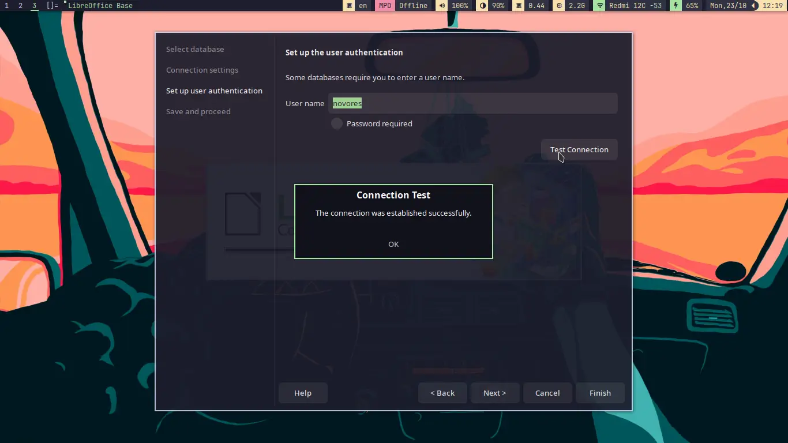
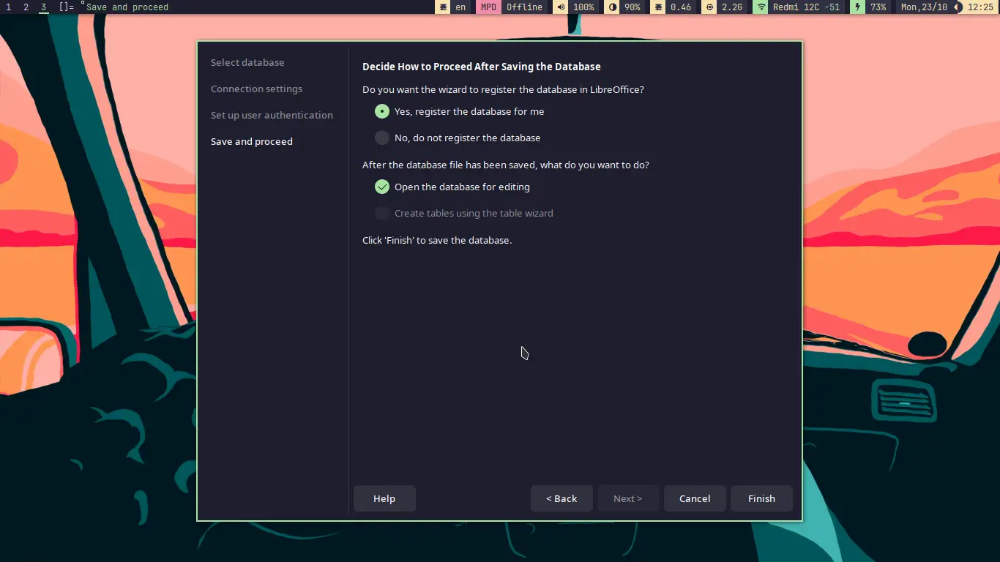

Menyambung PostgreSQL DB Ke LibreOffice Base
Table of Contents
✨ Latar Belakang
Bayangkan ketika kita memiliki data dalam PostgreSQL dan ingin menggunakan data tersebut untuk keperluan surat menyurat, misal mailing list, maka kita harus mengintegrasikan data tersebut dengan platform dokumen yang kita punya misalnya LibreOffice, LibreOffice memiliki yang namanya LibreOffice base alat yang sangat powerful dalam mengintegrasikan database yang kita punya baik dalam PostgreSQL, mariadb/MySQL, maupun MS Access sekalipun ke dalam seluruh platform LibreOffice.
❗ Asumsi
- Kamu sudah familiar dengan PostgreSQL dan LibreOffice Base
- PostgreSQL sudah terinstall di dalam PC-mu. (baca: PostgreSQL Archwiki)
- memiliki database yang dapat diakses.
- Pastikan PostgreSQL daemon berjalan dalam PC-mu.
🔥 Pemecahan Masalah
Setelah semua poin dalam seksi asumsi telah terpenuhi. lakukan langkah berikut.
- buka LibreOffice Base .
- di dalam Database LibreOffice Wizard, dalam tab Select database centang pilihan Connect to an existing database.
- Pilih PostgreSQL, lalu click Next
- dalam tab Connection settings (lihat gambar di bawah) ada form untuk memasukkan konfigurasi yang tepat untuk membuat koneksi yang tepat
ke PostgreSQL. formatnya esensial yang dimasukkan adalah
dbname=<nama database> hostaddr=<letak database disimpan>. contoh aku memiliki database dengan nama customers dalam local server. maka aku memasukkandbname=customers hostaddr=127.0.0.1. jika database-mu terletak di remote server costumers kamu bisa memasukkan alamat terkait dihostaddr. klik Next.
Info
kamu juga bisa memasukkan atribut lain seperti
port, user, dan password
- masuk ke tab set up user authentication masukkan user name yang dipakai untuk membuka database mu. centang password required jika kamu menggunakan password. Jika tidak, abaikan saja. pastikan database berhasil tersambung dengan menekan Test Connection. jika popup seperti gambar dibawah muncul, maka tanda bahwa kamu telah berhasil mengkoneksikan libreoffice base dengan Database PostgreSQL yang kamu punya. Klik OK 
- di tab Save and Proceed centang pilihan seperti gambar dibawah . Klik Finish.
- masukkan filename dan Save
Terimakasih telah membaca 👋